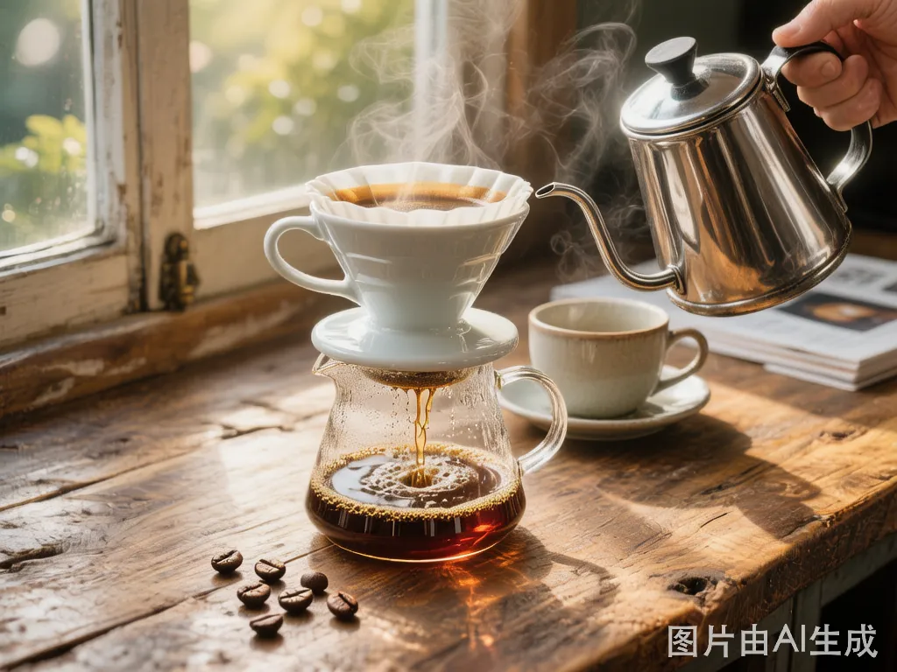
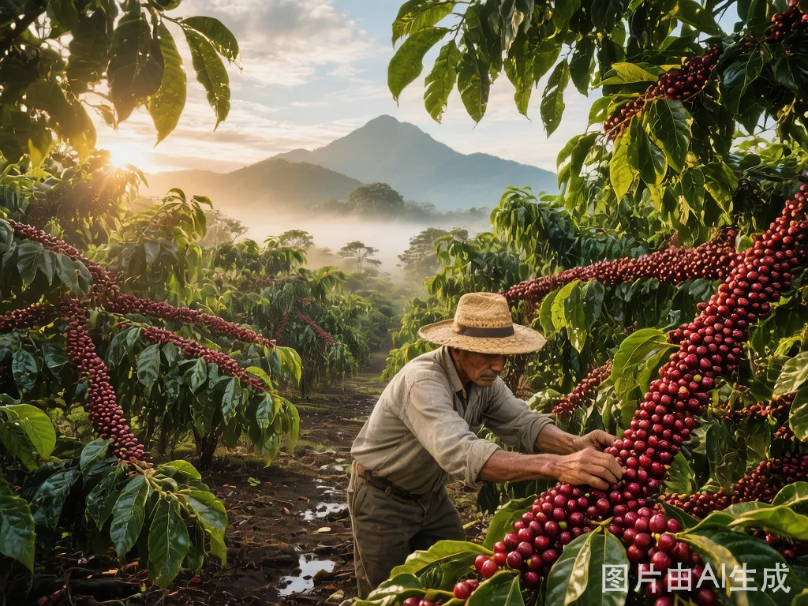
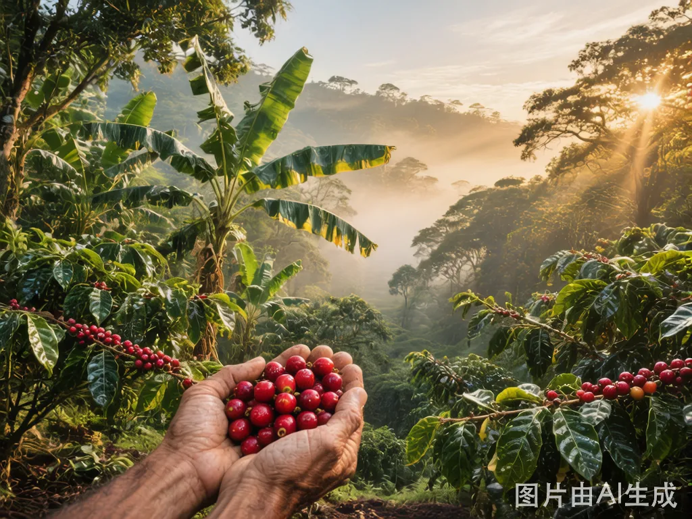

从埃塞俄比亚高原到你的杯子——产地故事、冲煮技巧、风味密码，每周更新。

一台V60、一张滤纸、一把壶——精品咖啡的门槛，比你想象的低得多。这篇写给每一个想在家喝到好咖啡的人。

安第斯山脉深处，咖啡树和香蕉树混种在一起。这里种出来的豆子，带着云雾的甜和火山土的厚。
耶加雪菲 G1 水洗 SCA 88.5——这串字符里藏着一支豆子的全部身世。花5分钟，告别咖啡文盲。
不是把热咖啡倒进冰块里就叫冷萃。真正的冷萃是一场12小时的耐心等待——而结果值得。

咖啡的故乡，海拔两千米的Gedeo区。这里的咖啡树和香蕉、牛油果混种，每一颗樱桃都要在枝头红透。
同样的豆子，不同的处理法，喝起来可能完全不一样。这是咖啡风味最底层的秘密。
杯测不是玄学。它是一套科学方法，帮你客观地判断一支咖啡的好坏。而且——很好玩。
买咖啡器具最容易踩的坑：花冤枉钱买不需要的东西，或者在关键设备上将就。